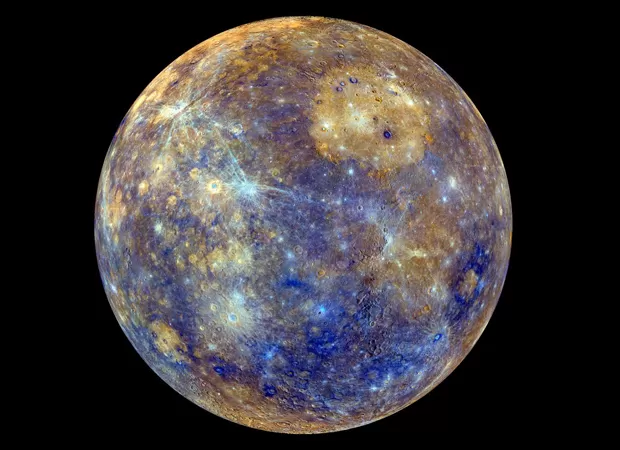

Mercúrio
Introdução
Mercúrio é o menor e mais interno planeta do Sistema Solar. Orbitando o Sol a uma distância média de apenas 0,39 UA, ele completa uma volta inteira em apenas 88 dias terrestres. Devido à sua proximidade com a nossa estrela, a observação a partir da Terra é um desafio, sendo visível apenas próximo ao nascer ou ao pôr do sol.
Características Físicas
A superfície de Mercúrio é fortemente craterizada, muito semelhante à da nossa Lua, indicando que o planeta está geologicamente inativo há bilhões de anos. Uma das suas características mais notáveis é a enorme variação térmica: devido à ausência de uma atmosfera espessa para reter o calor, as temperaturas equatoriais variam de -173 °C à noite para até 427 °C durante o dia.

Internamente, Mercúrio é incrivelmente denso. Cientistas estimam que seu núcleo de ferro e níquel ocupe cerca de 85% do raio do planeta, gerando um campo magnético global, embora fraco, equivalente a cerca de 1% da força do campo magnético da Terra.
Atmosfera
Mercúrio não possui uma atmosfera verdadeira como a da Terra ou de Vênus. Em vez disso, ele tem uma tênue exosfera composta por átomos ejetados de sua superfície pelo impacto do vento solar e de micrometeoritos. Essa camada extremamente rarefeita contém traços de oxigênio, sódio, hidrogênio, hélio e potássio.
Exploração Espacial
Alcançar Mercúrio exige uma imensa quantidade de energia para frear uma espaçonave contra a imensa atração gravitacional do Sol. Até o momento, o planeta foi visitado por poucas missões principais:
- Mariner 10 (1974–1975): A primeira espaçonave a se aproximar de Mercúrio, mapeando cerca de 45% de sua superfície através de três sobrevoos.
- MESSENGER (2004–2015): A primeira sonda a orbitar o planeta. Completou o mapeamento de 100% da superfície e confirmou a existência de gelo de água nas crateras polares permanentemente sombreadas.
- BepiColombo (Em andamento): Uma missão conjunta da ESA (Europa) e JAXA (Japão), lançada em 2018 e prevista para entrar na órbita de Mercúrio em 2025.
Dados Comparativos
- Diâmetro: 4.879 km
- Massa: 3,30 × 1023 kg (0,055 massas terrestres)
- Gravidade: 3,7 m/s²
- Dia (Rotação): 58,6 dias terrestres
- Luas: Nenhuma conhecida
Citação Científica
"A exploração de Mercúrio nos obriga a reavaliar constantemente nossas teorias sobre como os planetas rochosos se formaram e evoluíram. Ele é um mundo de extremos, surpresas e mistérios persistentes."